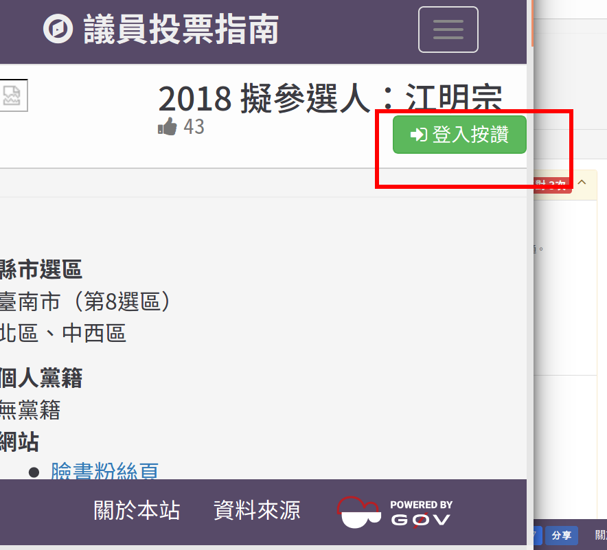

公民科技
kiang @ 交大土木系 2018-04-11
我曾經以為自己活在民主國家
由MrWiki321 - 自己的作品，CC BY-SA 3.0，https://commons.wikimedia.org/w/index.php?curid=31802086
不關心政治的懲罰
就是
被糟糕的人統治
but...生活有點忙
怎麼辦？
先聊其他故事
一個老婆中獎的故事
那不是驗孕棒!!!
2015 搖滾區
生活...
- 早上起來，附近噴藥
- 去吃午餐，附近噴藥
- 下午散步，附近噴藥
- 晚上回家，通知明天噴藥
坐以待斃
高雄登革熱地圖
@ 2014
衛生局資料
村里界圖
台南登革熱地圖
台南登革熱地圖
上新聞
發酵
病媒蚊指數
forked by weoi
登革熱密度地圖
forked by happychang
坑坑相連到天邊
外合
裡應
疾管署
釋出全國資料
全國版本
病例分佈
疾管署登革熱病例群聚地圖
- 廣義的政治就是生活，關心生活就是關心政治
科技參與重點是解決問題，不是科技
真的被火燒到時通常比較有感
科技參與重點是解決問題，不是科技
真的被火燒到時通常比較有感
接著聊聊失敗案例
老人
戶籍資料 != 實際情況
低度使用(用電)住宅 > 無原始資料
災害潛勢地圖 > 同上，也太舊
公共管線圖資 > 殘缺不全
違建資料 > 有也不給
噴藥
前一天晚上才能確定
沒有行程細節
現場狀況沒有稽核
人力短缺且缺乏訓練
軌跡
第一線抗拒使用
設備誤差太大
無法區分場次
三分鐘熱度
1999民眾回報
需要人工過濾
沒有狀態追蹤
資料回饋不易
缺少事前演練
並不是每個故事都有完美的結局
全台累積死亡209人，其中台南市112人、高雄市95人、屏東縣2人。
2015-12-22
我們能否從消失的生命中學到些什麼？
平時缺乏各種演練
跨單位資訊缺乏連結
太多繁冗的行政工作
預算排擠問題
科技 != 魔術
我們需要
更多軟體基礎建設
更多開放資料
更多有概念的人
更多嘗試
我們需要你
不關心政治的懲罰
就是
被糟糕的人統治
失敗案例還有很多
所以聊 g0v 吧
「不要問為何沒有人做這個，先承認你就是『沒有人』」。
因為，「沒有人」是萬能的。
零時政府促成了
一群人 > 一個人
但很多時候你還是得想辦法自己繼續走下去
from Vinoth Chandar( https://www.flickr.com/photos/vinothchandar/4278047231 )公民 > 科技
2018台南市議員擬參選人
北區、中西區
我知道我所期待的，檯面上的那些人
不可能替我實現
「不要問為何沒有人做這個，先承認我就是『沒有人』」
科技為先，老地方可以有新方法
開放透明，而不是最後一刻包裹表決
強化軟體，蚊子館設定停損點
按個讚吧 ;)
Q&A